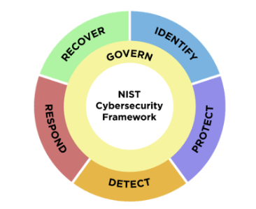

The Microsoft 365 Maturity Model – Security Competency
Note
This is an open-source article with the community providing support for it. For official Microsoft content, see Microsoft 365 documentation.

Overview of the Concepts [tl;dr]
Every organization using Microsoft 365 stores valuable information in the cloud—customer data, financial records, strategic plans, intellectual property, and employee information. Without proper safeguards, this information can be exposed to the wrong people, stolen by bad actors, accidentally shared externally, or lost entirely.
The Security Competency helps organizations understand where they are today in protecting their Microsoft 365 environment and what steps they can take to improve. It's not about implementing every security feature Microsoft offers—it's about building the right level of protection for your organization's needs, risks, and resources.
Organizations at higher maturity levels experience fewer disruptive incidents, spend less time responding to security problems, enable more confident collaboration, and can meet customer and regulatory expectations for data protection.
Definition of this Competency
Security is about protecting your organization's information and systems from harm. This includes preventing unauthorized people from accessing your data, stopping accidental exposure of sensitive information, detecting when something goes wrong, and recovering quickly when incidents occur.
Based on NIST Cybersecurity Framework (CSF), we can divide this into five phases:
- Identify (Pre-breach)
- Protect (Pre-breach)
- Detect (Breach)
- Respond (During breach)
- Recover (Post-breach)

Effective security programs require solutions that address questions across each phase:
Identify
- Do we have visibility into our system's security posture and associated risk?
- Have we identified and prioritized critical security controls for Microsoft 365 workloads?
- Are we leveraging built-in assessment tools (like Microsoft Secure Score) to measure security posture?
Protect
- Are appropriate technical safeguards implemented to prevent or limit cybersecurity incidents?
- How do we prevent sensitive customer data from being accidentally shared externally?
- How do we ensure only the right people can access financial or HR information?
Detect
- How do we know if someone's account has been compromised?
- How, where, what, and when did a user access files in our systems?
Respond
- Do we have up-to-date contact information for executive leadership to enable rapid incident escalation?
- Do we have clear authority and documented procedures to take systems offline during security incidents?
- Are M365 security roles properly assigned and documented?
Recover
- Are backup solutions configured for cloud productivity platforms to enable rapid recovery?
- Have we tested our recovery procedures using native recovery options?
Mature security practices address three interconnected areas:
People and Culture: Does everyone understand their role in protecting information? Is security viewed as a shared responsibility across the organization?
Processes: Do we have clear policies about data protection? How do we respond when something goes wrong? How do we keep up with changing threats and regulations?
Technology: Do we use the security tools available in Microsoft 365 effectively? Are protections automated or do they rely on people remembering to do the right thing?
Evolution of the Security Competency
See the Maturity Model for Microsoft 365 - Introduction for definitions of the maturity levels.
Level 100 - Initial
At level 100 maturity, organizations do not view security as a business priority. Security is seen as an IT concern rather than something that affects daily operations or business success. There is no recognition that default security settings in Microsoft 365 are inadequate.
Level 100 Characteristics
People and Culture
- Leadership does not recognize security as essential to business operations
- No designated security roles or responsibilities
- Employees are unaware of security risks
- No security training or awareness programs exist
- Security is viewed as something that slows down work
Process
- No security framework used (Zero Trust, CIS, ISO, NIST)
- No formal security policies or procedures documented
- Security incidents handled reactively and inconsistently
- No systematic approach to identifying or managing security risks
- Passwords managed casually; weak passwords and reuse are common
- Backup and recovery procedures are absent or untested
Technology
- Cloud platform security settings remain at vendor defaults
- No multi-factor authentication (MFA) implemented
- No encryption beyond vendor-provided defaults
- No monitoring or logging of security events
- No tools to prevent data loss or inappropriate sharing
- Endpoint devices lack security protections
Level 100 Impacts
At this level, you can expect:
- High vulnerability to common attacks such as phishing and ransomware
- No visibility when breaches occur; attacks may go undetected for weeks
- Significant business disruption when security incidents occur
- Employees accidentally exposing sensitive information
- Inability to meet customer security requirements in contracts
- Potential regulatory violations and fines
- Reputational damage following preventable incidents
Level 200 - Managed
At level 200 maturity, organizations acknowledge that security matters but treat it as a checklist exercise rather than a strategic business enabler. Security is recognized as necessary after experiencing an incident, but the response is tactical rather than systematic.
Level 200 Characteristics
People and Culture
- Leadership understands security is important but hasn't prioritized it
- Basic security roles may be assigned (often part-time)
- Some employees receive basic security training, but inconsistently
- Security awareness efforts are event-driven rather than ongoing
- Commitment to following policies varies widely
Process
- A framework is selected to provide guidance
- Basic security policies written but not consistently enforced
- Incident response remains largely ad-hoc
- No formal process for keeping up with emerging threats
- Risk assessments not performed regularly
- Data classification attempted manually but inconsistent
Technology
- Basic security tools implemented (antivirus, some MFA)
- Security settings adjusted from defaults in some areas but not systematically
- Microsoft Secure Score known but recommendations rarely acted upon
- Basic encryption applied to some sensitive data
- Limited access controls beyond basic permissions
- Some monitoring may occur, but alerts are ignored or misunderstood
- Data loss prevention (DLP) not implemented
Level 200 Impacts
At this level, you can expect:
- Improved security posture compared to Level 100, but significant gaps remain
- Security incidents still occur regularly
- Employees see security as burdensome rather than protective
- Critical security recommendations go unaddressed
- Inconsistent protection creates confusion
- Inability to demonstrate security maturity to customers or auditors
- False sense of security
Level 300 - Defined
At level 300 maturity, organizations recognize that security is essential to business continuity and competitive advantage. Leadership drives security as a priority, and the organization implements standardized, documented practices across all departments.
Level 300 Characteristics
People and Culture
- Leadership views security as essential and actively sponsors initiatives
- Security roles and responsibilities formally defined
- Regular training programs for all staff, including phishing simulations
- Employees have broad awareness of security policies
- A security culture is emerging
Process
- Comprehensive security policies documented and aligned with objectives
- Security measures implemented consistently with clear ownership
- Formal incident response plans with defined roles and escalation procedures
- Regular risk assessments conducted
- Secure configurations standardized across Microsoft 365 and endpoints
- Business continuity plans include security considerations
Technology
- ✨ Phishing-resistant multi-factor authentication (MFA) required for all users
- ✨ Microsoft Secure Score actively monitored and systematically addressed
- Centralized logging and monitoring tools implemented
- Data classification includes some automation
- Encryption applied systematically to sensitive data
- Access controls standardized with centralized identity management
- Basic DLP policies implemented for high-risk scenarios
- Backup systems protected and regularly tested
- Single sign-on (SSO) implemented for many systems
Level 300 Impacts
At this level, you can expect:
- Significantly reduced security incidents
- Faster incident detection and response
- Enhanced ability to demonstrate security maturity to customers and regulators
- Alignment of security initiatives with business objectives
- Improved employee confidence in sharing and collaborating
- Leadership involvement in security governance
- Ability to meet most customer and regulatory security requirements
- Reduced burden on IT staff
Level 400 - Predictable
At level 400 maturity, an organization's approach to security becomes proactive and data-driven. The focus shifts from establishing policies to continuously improving protection through automation, measurement, and prediction.
Level 400 Characteristics
People and Culture
- Leadership sees value in continuously improving security as competitive advantage
- Dedicated security teams work in partnership with business units
- High levels of security awareness; employees actively report potential threats
- Professional development ensures security personnel skills remain current
- Security culture is strong
Process
- Security conversations occur at all levels and embedded into business processes
- Security performance measured with metrics (time to detect, respond, recover)
- Policies regularly tested, audited, and refined based on metrics
- Continuous risk assessments with clear processes
- Governance is proactive; security reviews part of project planning
- Business continuity plans regularly tested
- ✨ Regular penetration tests performed by third parties
Technology
- ✨ Advanced security tools: Microsoft Defender for Office 365, Defender for Endpoint, Microsoft Sentinel (SIEM)
- ✨ Conditional Access policies dynamically evaluate every access request
- Automated threat detection and response for common threats
- End-to-end data encryption enforced
- ✨ DLP, CASB, and SaaS Security Posture Management tools implemented
- Automated and comprehensive data classification
- Centralized dashboards provide real-time visibility
- Enterprise architecture harmonizing systems
Level 400 Impacts
At this level, you can expect:
- Significantly reduced risk; most common attacks prevented or detected immediately
- Proactive threat prevention rather than reactive incident response
- Increased stakeholder confidence in security posture
- Efficient security operations; automation handles routine tasks
- Rapid response and recovery when incidents occur
- Clear security metrics that inform business decisions
- Competitive advantage; security maturity becomes a differentiator
Level 500 - Optimizing
At level 500 maturity, organizations view security as a strategic enabler that actively supports business goals. Security is deeply embedded in organizational culture and decision-making at every level.
Level 500 Characteristics
People and Culture
- Leadership views security maturity as strategic advantage enabling business innovation
- Security is deeply ingrained in organizational culture
- Continuous learning programs ensure adaptation to latest threats
- Collaboration between security, compliance, operations, and business units
- Decision-makers are risk-aware rather than risk-averse
- Honesty, accountability, and transparency are organizational principles
Process
- Security embedded in all business processes and strategic planning
- Organization proactively reviews and updates security practices
- Results continuously monitored and used for improvement
- ✨ Independent security standards (ISO/IEC 27001) used to benchmark best practices
- Metrics clearly connect security outcomes to business strategy
- Business continuity plans regularly tested with realistic scenarios
- Security processes externally audited for validation
Technology
- ✨ Cutting-edge tools including AI-driven threat analysis and behavioral analytics
- ✨ End-User Behavioral Analytics (EUBA) tools fully integrated
- ✨ Zero Trust architecture fully implemented
- Security automation is pervasive
- ✨ Adaptive Conditional Access policies automatically adjust based on real-time risk
- Comprehensive DLP rules applied across all platforms
- Controls subject to continuous automated testing and improvement
- Security tools integrated across the entire technology ecosystem
Level 500 Impacts
At this level, you can expect:
- Sustained protection against evolving threats
- Security maturity benchmarked against industry best practices
- Competitive advantage and industry leadership
- Security enables business innovation
- Minimal security incidents; swift and effective response when they occur
- Strong alignment between security controls and organizational risk appetite
- Comprehensive visibility and control across all systems
- Recognition that security is a journey, not a destination
Note
Achieving Level 500 is rare; most organizations never reach or sustain this level. Even those that do must continuously invest to maintain it.
Common Microsoft 365 Security Toolsets
Understanding which tools support security objectives at each maturity level helps you prioritize implementation.
Foundational Tools (Level 100-200)
| Tool | What It Does | Business Value |
|---|---|---|
| Multi-Factor Authentication (MFA) | Requires two or more verification methods | Prevents most account compromise attacks |
| Security Defaults | Automatically enables baseline security settings | Immediate security improvement with minimal configuration |
| Microsoft Secure Score | Analyzes configuration and provides recommendations | Clear visibility into security gaps |
| Exchange Online Protection | Anti-spam and anti-malware for email | Blocks most malicious emails |
| Sensitivity Labels | Classify documents and emails by sensitivity | Raises awareness and enables informed sharing decisions |
Standardization Tools (Level 300)
| Tool | What It Does | Business Value |
|---|---|---|
| Conditional Access Policies | Evaluates risk factors and applies appropriate controls | Dynamic security that adapts to risk |
| Defender for Office 365 (Plan 1) | Safe Attachments, Safe Links, anti-phishing | Catches sophisticated threats |
| Audit Logging and Monitoring | Records user and administrator activities | Enables detection and investigation |
| Data Loss Prevention (Basic) | Detects sensitive information and prevents inappropriate sharing | Prevents accidental data exposure |
| Retention Policies | Automatically retains and deletes content based on policies | Ensures compliance and reduces risk |
Advanced Protection Tools (Level 400)
| Tool | What It Does | Business Value |
|---|---|---|
| Defender for Office 365 (Plan 2) | Automated investigation and response | Dramatically reduces time to remediation |
| Defender for Endpoint | Endpoint detection and response (EDR) | Detects and responds to device threats |
| Microsoft Sentinel | Security Information and Event Management (SIEM) | Comprehensive visibility across all systems |
| Defender for Cloud Apps | Cloud Access Security Broker (CASB) | Discovers shadow IT and controls data flow |
| Advanced Audit | Extended retention and additional audit events | Enables long-term forensic investigations |
Optimization Tools (Level 500)
| Tool | What It Does | Business Value |
|---|---|---|
| Defender for Identity | Monitors for compromised identities and insider threats | Detects attacks targeting identity infrastructure |
| Insider Risk Management | Uses ML to detect potential insider threats | Identifies high-risk behaviors before damage occurs |
| Information Barriers | Prevents communication between defined groups | Enables compliance with ethical walls |
| Privileged Access Management | Just-in-time, time-limited access to privileged roles | Reduces standing privileged access risk |
| Microsoft 365 Defender XDR | Extended Detection and Response across all Defender products | Detects multi-stage attacks across systems |
Cost & Licensing Considerations
Security maturity requires more than software licensing. Consider these investment areas:
Licensing Patterns by Maturity Level
| Level | Typical Licensing | Key Capabilities Enabled |
|---|---|---|
| 100→200 | Business Basic/Standard or E3 | MFA, Security Defaults, basic monitoring |
| 200→300 | Business Premium or E3 | Conditional Access, enhanced monitoring |
| 300→400 | E5 or E5 Security | Advanced threat detection, SIEM, comprehensive DLP |
| 400→500 | E5 + specialized tools | Behavioral analytics, Zero Trust, automation |
Beyond Licensing
Personnel Costs: Security responsibilities scale with maturity—from part-time IT staff at Level 100-200 to dedicated security teams at Level 400-500.
Professional Services: Security assessments, policy development, architecture design, penetration testing.
Training and Awareness: Employee training platforms, technical certifications, tabletop exercises.
Tools and Add-ons: SIEM platforms, phishing simulation tools, backup solutions, specialized security tools.
Return on Investment
Security investments must be weighed against potential costs of inadequate security:
- Forensic investigation and response ($50,000-$500,000+ per major incident)
- Legal fees, regulatory fines, and penalties
- Lost business opportunities
- Reputational damage
- Competitive disadvantage
Mature security practices create positive business value through contract wins, reduced insurance premiums, faster incident response, and competitive differentiation.
Tip
Download the Microsoft 365 Comparison table to see which security and compliance features are available with each license option.
Resources to Learn More
Microsoft Official Documentation
- Microsoft Security Documentation
- Microsoft Cybersecurity Reference Architectures (MCRA)
- Zero Trust Strategy and Architecture
- Microsoft 365 Defender Documentation
- Microsoft Purview Documentation
Community Resources
Training and Certification
Related Documents
- Maturity Model for Microsoft 365 - Introduction
- Elevating Security
- Governance, Risk, and Compliance Competency
- Infrastructure Competency
Conclusion
Security maturity is an ongoing journey of continuous improvement. The threat landscape evolves constantly, your organization changes, and Microsoft 365 capabilities expand regularly. What matters is not reaching a specific maturity level, but consistently improving your ability to protect your organization's information while enabling confident collaboration and business growth.
Key Takeaways:
- Security maturity is progressive—each level builds the foundation for the next
- Every level delivers business value—the right level depends on your risk profile and resources
- Security is more than technology—people and processes matter equally
- Leadership commitment is essential—sustained executive support drives success
- Start where you are—small, consistent steps forward deliver more value than waiting
Principal authors:
The MM4M365 core team has evolved over time and these are the people who have been a part of it.
Core team
Emeritus